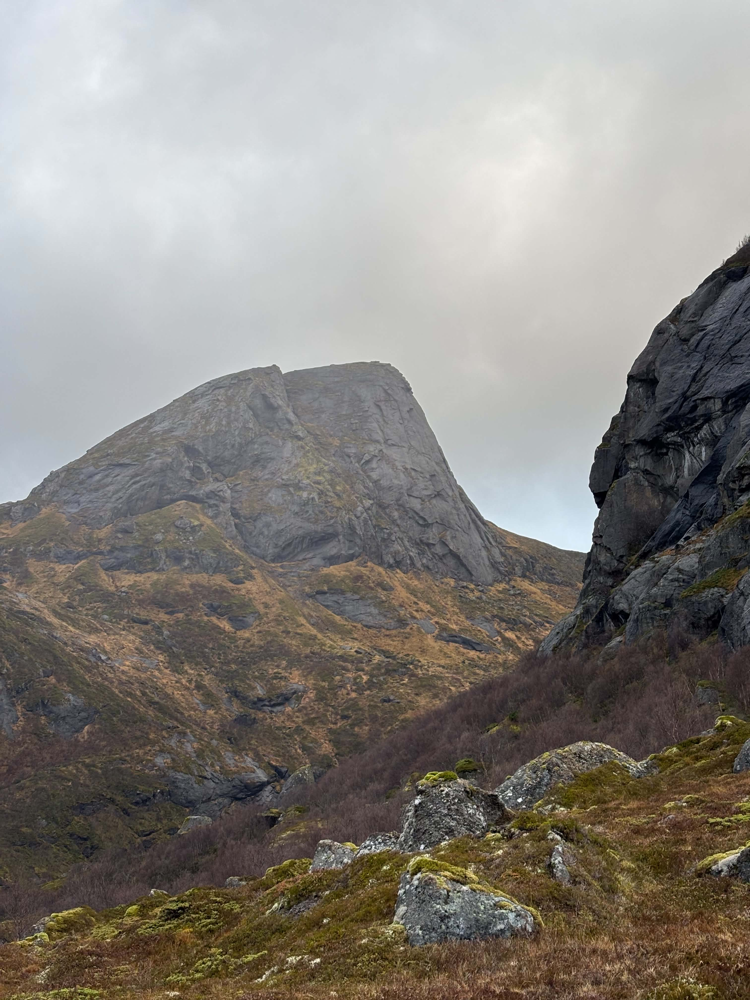
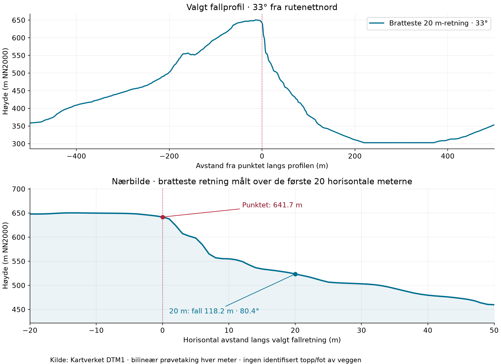
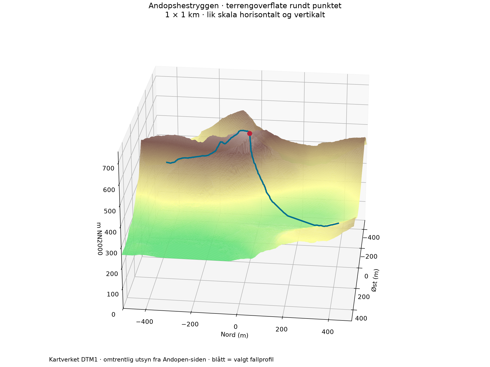

PROSJEKTRAPPORT / 05.11.2026
ANDOPSHESTRYGG-PROSJEKTET
Langs
en bratt rygg.
Et klatreprosjekt ved Andopshesten i Flakstad. Første dokumentasjon med prosjektfoto og offisielle terrengdata.
Undersøk terrenget ↓13.37244° ELOFOTEN
NORGE

01 / UTGANGSPUNKTET
En linje å
undersøke.
Bildet er tatt fra Andopen ved 68.1075° N, 13.4173° E, oppgitt av fotografen, og viser en markert rygg og bratte partier. Koordinatet gir oss et fast utgangspunkt for å se på terrengets form og høyde.
Rapporten gjelder Andopshestrygg-prosjektet ved 68.10012° N, 13.37244° E. En klatrelinje, total rutelengde, gradering og bestigningshistorikk er ikke fastslått i datagrunnlaget.
Fotostedet brukes til startretningen i 3D. Kamerahøyde, brennvidde og perspektiv er ikke rekonstruert; fysiske høyder og terrenghelninger nedenfor kommer fra Kartverkets terrengmodell. Et separat bildeanslag beskriver bare vinkelen i bildeflaten.
Se prosjektbildet i full størrelse ↗02 / MÅLT I TERRENGMODELLEN
Det bratteste
lokale fallet.
Punktet ligger omtrent 641,7 m over havet. Den bratteste lokale retningen fra punktet gir 80,4° helning over 20 horisontale meter.
Her faller modellen 118,2 meter mot nordnordøst, i retning 33° fra rutenettnord. Vi følger denne samme rette profilen videre: etter 300 horisontale meter er samlet høydeforskjell 339,0 meter og snitthelningen 48,5°.
- Punktets terrenghøyde
- 642m
- Bratteste fall, første 20 m
- 80,4°
- Fall langs profilen, 0–300 m
- 339m
- Veggens totale høyde
- Ikke avklart

Én valgt profil: 33° fra rutenettnord. Positive avstander går nedover mot nordnordøst. Bilineær prøvetaking hver meter; aksene har ulik målestokk.
Helningen endrer seg nedover.
| Horisontalt strekk fra punktet | Samlet høydeforskjell | Snitthelning |
|---|---|---|
| 0–20 m | 118,2 m | 80,4° |
| 0–100 m | 261,4 m | 69,1° |
| 0–300 m | 339,0 m | 48,5° |
Retningen er valgt ved å undersøke 360 retninger med 1° intervall og finne størst netto fall over de første 20 horisontale meterne fra koordinatet. En annen målelengde kan gi en annen bratteste retning. Dette beskriver det lokale fallet, ikke en innmålt klatrelinje eller hele den synlige veggens helning.
339 meter er samlet terrengfall langs det valgte 300-metersstrekket. Veggens topp og fot er ikke identifisert uavhengig, så dette er ingen bestemmelse av vegghøyde, rutelengde eller nødvendig taulengde.
Stemmer dette med bildet?
Vi tolker ryggen som kanten på høyre side av hovedtoppen midt i bildet, ikke forgrunnsveggen helt til høyre. Den synlige kanten anslås grovt til 60–70° i bildeflaten: en rett linje over et lengre parti gir omtrent 59°, og et brattere midtparti omtrent 66°. Endepunktene er valgt manuelt; dette er et bildeanslag, ikke en måling av fysisk terrenghelning.
DTM-profilens 69,1° over 100 horisontale meter og 74,6° over 50 meter er grovt forenlig med en bratt øvre rygg. Den korte delen på 80,4° over 20 meter kan ikke bekreftes fra bildet alene. Fotoets synlige kant og den valgte fallprofilen er ikke entydig koblet sammen.
Perspektiv, kameravinkel og ulikt linjevalg påvirker sammenligningen. Bildet gir derfor en kvalitativ rimelighetskontroll, ikke en uavhengig bekreftelse av de nøyaktige modellvinklene. Pikselendepunktene er dokumentert i kontrollverdiene.
| Strekk i DTM-profilen | Modellvinkel | Modell minus bildeanslag 60–70° |
|---|---|---|
| 20 horisontale meter | 80,4° | +10,4 til +20,4° |
| 50 horisontale meter | 74,6° | +4,6 til +14,6° |
| 100 horisontale meter | 69,1° | −0,9 til +9,1° |
Dette er bare den regnemessige forskjellen mellom modellvinkelen og bildeanslaget. Den sier ikke hvor stor målefeilen er, siden bildevinkler og terrengvinkler ikke er direkte sammenlignbare.
03 / ROMLIG OVERSIKT
Ryggen i 3D.
Et utsnitt på 1 × 1 km, med det oppgitte punktet og valgt fallprofil. Startretningen følger fotostedet ved 68.1075° N, 13.4173° E. Ingen vertikal overdrivelse.

2 m visningsnett · grunnlag: Kartverket DTM1
Åpne 3D i eget vindu ↗04 / BERGGRUNN OG PLASSERING
Monzonitt ved
punktet.
NGUs regionale berggrunnskart klassifiserer punktet som monzonitt, i en enhet med syenitt til kvartsmonzonitt, stedvis deformert til gneis. Den tilhører Lofotmangeritten og er angitt til omtrent 1,80–1,77 milliarder år.
Dette er en regional kartbestemmelse i målestokk 1:250 000, ikke en bergartsprøve fra ryggen. Bergartsgrensen i et slikt kart avgjør ikke nødvendigvis bergarten i alle deler av en klatrelinje.
De gamle dypbergartene har senere blitt frilagt og formet av heving, erosjon og istidenes landskapsforming. Dagens ryggform er langt yngre enn bergartens størkningsalder.
NGUs punktoppslag ↗
05 / GRUNNLAG OG NESTE STEG
Fra idé
til befaring.
Adkomst, konkret linjevalg og arbeidsopplegg for denne ryggen er ikke beskrevet av prosjekteieren ennå. Rapporten gir derfor ingen ferdig turtrasé eller sikringsplan.
DTM1 / kontrollert
Samme offisielle DTM1-rute som Sørdalen, men et eget utsnitt ved dette koordinatet. 1 m oppløsning og 100 % gyldige høydeceller i 2 × 2 km.
Laserdekning / bekreftet
Metadata ved punktet viser «NDH Lofoten 2pkt 2017». Denne rapporten bygger på DTM1. Et eget rått LAZ-uttrekk for Andopshestryggen er ikke lastet ned.
Kilder og dokumentasjon
Terrengdata: Kartverket, NLOD 2.0. Berggrunn: NGU N250. Prosjektbildet er levert i prosjektmappen. DTM viser én høyde per celle og gjengir ikke overheng. Passordskjermen er en enkel visningssperre; direkte filer kan åpnes utenom den.